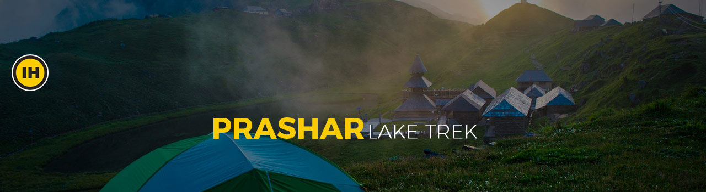

BOOK NOW
PRASHAR LAKE TREK (EVENT) 80♥
Synopsis
Surrounded by the imposing Dhauladhar ranges in Kullu Valley is a pristine, blue-water lake called Prasha, one of Himachal Pradesh's best-kept secrets. The trek to Prashar Lake follows a charming trail through a forest, small rivulets and scenic pasture-lands. Meanwhile, one can enjoy the local culture as the trail goes through villages here. The trek offers a breathtaking 180 degree view of the Dhauladhar, Pir Pinjal and Kinnaur mountain ranges.
VENUE:Pick up from Mandi Bus Stand, National Highway 21 Motipur Kartarpur, Inter State Bus Terminal Bus Stand Mandi, Mandi, Himachal Pradesh 175001, India